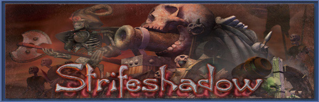

Strifeshadow Development Notes -- Issue #1
The Development Notes are a semi-periodical feature that we will
regularly be posting on the site. They will contain information on various
game design issues related to Strifeshadow. If you want to suggest a topic,
post it on the forum. We are all ears...
So without further ado... Heres the first feature:
Strifeshadow units all have an individual purpose within the game, that
is distinct from other units of the same race. Units are essentially categorized
by their intrinsic play "flavor". The types of units that you will see in Strifeshadow include:
1) Infantry
Generally the most basic type of unit available to a race, infantry
units are not particularly fast or slow, and usually have melee weapons,
or extremely short-ranged ranged weapons.
Used for primary assault, force backbone, and sometimes
cannon-fodder in most RTSes, infantry in Strifeshadow are capable of pinning
down units they engage in combat, effectively allowing them to screen more
valuable units like ranged units or artillery from attack.
Infantry units fare acceptably well against any unit, except short-ranged
artillery and skirmishers. They are extremely good against ranged units
(if they can get to them).
2) Ranged
Ranged units are used to support other units, by adding extra firepower
to the front line. They are also suitable for shooting air units. Archers,
Crossbowmen, and similar units are all ranged units using the definition
of "ranged" we use.
Ranged units in Strifeshadow are particularly prone to fast-moving
melee troops (strike troops), and somewhat prone to infantry. They are also
somewhat prone to long-range artillery and some spells. They are
indispensible against short-range artillery, and are a necessary
compliment to nearly any possible unit mix, even though they are a
poor stand-alone troop.
3) Short-Range Artillery
Probabaly one of the least familiar types of units to most RTS gamers,
short-range artillery is indispensible against melee units of any variety.
By unleashing devastating short-range splash damage attacks, short-range
artillery makes up for its lack of manueverability with firepower.
the only examples of this that we know of in other games are the Dwarf
in Myth: The Fallen Lords (www.bungie.com), and
to a certain extent, the Archon in Starcraft (www.blizzard.com). Short-range artillery are highly succeptable to ranged
units, long-range artillery, and skirmishers.
4) Long-Range Artillery
Also refered to as siege units, Long-Range artillery units are useful for
pounding down defensive structures with impunity, and destroying vulnerable
units from a long range, such as short-ranged artillery or spellcasters.
Probabaly one of the RTS player's favorites, Strifeshadow sports some
rather odd and interesting siege weapons, including a mage that can
siege. Nothing is quite as fun as pummeling your opponent from atop a
cliff behind their base...
5) Skirmishers
Skirmishers are essentially fast-moving ranged units. Used for hit-and-run
attacks on vulnerable locations, Skirmishers are indispensible for ripping up
slower infantry units, assassinating mages, or to a certain extent, taking out
artillery pieces. They are also especially well suited to probing and
exploting small holes in enemy base defense. Examples of skirmishers in
other games include the vulture from Starcraft and APC/Bikes in CNC.
Skirmishers are ineffective against ranged units, strike troops, and
protected long-range artillery units. Skirmishers are among the
best scouts in the game.
6) Strike Troops
As fast-moving melee units, strike troops are useful for many of the
same things skirmishers are. They are much more durable, however, and
are also uniquely suited to rip into the flanks of enemy infantry
formations, especially when they are already in combat with other
forces. By being able to quickly strike "behind the lines", strike
troops can easily turn the tide of battle. Examples of strike troops
include speed-upgraded zealots from Starcraft, and Ghols from
Myth:The Fallen Lords.
7) Spellcasters
Spellcasters are probabaly the most diverse of all the unit classifications.
Ranging from overtly offensive, to purely defensive, spellcasters have a
wide array of abilities that can greatly supplement the potency of
any force.
Back to Lost Scrolls